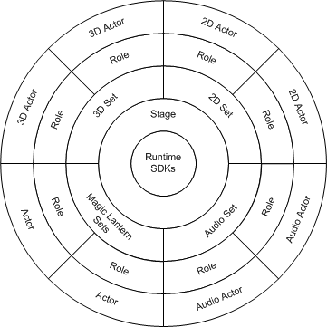
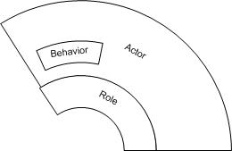
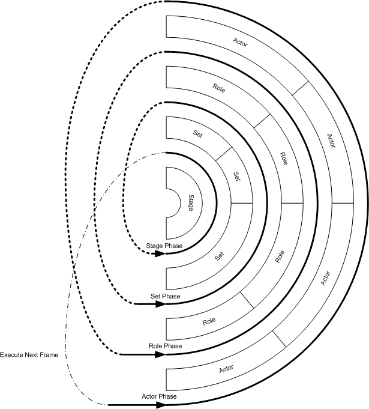

The Magic Lantern Software Development Kit (SDK) consists of four major classes of objects:
Each object has a specific role in the execution of a title as each gains control of the processor sequentially during each frame of execution. For maximum efficiency, Magic Lantern objects are written in C++ and compiled to native code. Magic Lantern objects may also be written in Java for Java-based targets (e.g. OCAP or DVB-MHP). New functionality is added through subclassing and composition. For simplicity and efficiency, Magic Lantern classes use only single inheritance.
Figure 1.4.1 shows how the main Magic Lantern objects are related to each other.

Figure 1.4.1: Main Magic Lantern Objects
An actor is a simple C++ or Java object that is the basic unit of autonomous action within a title. Actors implement the simulation and behavioral aspects of a title element independent of its presentation. Actor code is intended to be independent of the target platform. This makes it easier to develop a title that is portable to multiple platforms.
Each actor usually has a crorresponding Role object, described below, that is responsible for its presentation in the title. Figure 1.4.2 shows a view of a Magic Lantern Actor with Behaviors in relationship to its Role.

Figure 1.4.2: View of Magic Lantern Actor with Behaviors in relationship to
its Role
All the “characters” in a Magic Lantern title are actors. For example, in a driving game, the car, the road, a tree alongside the road, and an on-coming car are separate actors. In addition, sounds can be actors. Thus, the hum of the car accelerating and the explosive sound of a crash could each be generated by a different actor. Cameras for 3D scenes can also be actors that can have behaviors, such as a following behavior. There can be some actors which may have no visible or audible representation in a title. For example, actor objects can function as database managers or collision detection managers.
An actor consists of the following elements:
A Magic Lantern actor is compiled into a Dynamic Shared Object (DSO) or Java Jar package. This permits actors to be dynamically loaded into an executing title in the authoring environment.
The internal state of an actor can be implemented as ordinary C++/Java member variables. Some of these members can be exposed through the authoring tools; these are called “properties” and they are designated in a special way in the class implementation. Actor properties allow other members of the title development team to edit the actor’s state in the Magic Lantern tools without additional programming modifications. This can be particularly useful to the team’s title designers and artists and can minimize requests for iterative programming revisions. Team members can use properties to define and test different physical characteristics and behavioral characteristics for an actor. For example, a title designer can tune the performance of a vehicle experimenting with various settings of its exposed acceleration property.
Different versions of media can be designated for an actor by establishing “media references” as properties. A media reference is a pointer to an outside media file, such as a graphics image or a sound file. Using media reference properties, artists can use the Magic Lantern tools to independently update actor media or adapt it for specific platforms.
Non-property members can be any data type supported by C++ or Java, while
property members are constrained to certain Magic Lantern data types. For ease
of programming for different platform math requirements, Magic Lantern defines
a special data type that can be compiled as either a floating-point value or
a fixed-point
value.
Actor member functions implement the various behaviors of the actor. Because the object implementation is based on C++/Java, the actor programmer can define any number of member functions. Each actor constructor mst be callable from a class static function that expects a common constructor interface. These class static functions are placed in a statically initialized table at runtime. Multple constructors with different interfaces are permitted within Magic Lantern. There must be, however, a constructor that has the noarguments interface (default constructor).
There are also two initialization routines that are typically implemented by an actor class. The first is a function called initClass(). Title programmers write an initClass() procedure to register the actor class and properties with the Magic Lantern tools. The tools call initClass() which then calls back to registration functions within the tools. The initClass() function is compiled out of the actor code for targeted titles.
The second initialization routine, which is optional, is called init(). If an actor’s init function is present, Magic Lantern will call it after the actor has been initialized from the DWP (during rehearsal) or the Playprint (for targeted titles). This allows the actor to do instance-specific modification of the property values that were set by the DWP or Digital Playprint.
The actor definition file defines the various aspects of each actor for the tools. The title programmer creates this actor definition file so that the actor can be tested and modified in the tools. The actor definition file is in the DWP format and is typically included in the title DWP files. It defines items such as the actor property names and types, the location of the actor header file and DSO, the actor parent, and so on. These files are not used in a targeted title; they exist only for the sake of the authoring tools.
Roles are paired with actors to handle the actors’ platform-dependent
presentation. The role is responsible for displaying the actor. Actors contain
a pointer to their role; this pointer can be used to access the role’s
API which the actor uses to push state changes over to it. As mentioned previously,
some actors do not have
roles.
A property carrier is an object designed for communication between actors and roles. Property carriers are specialized building blocks that carry out actor requests by operating on role internals.
Roles are the system components responsible for media delivery, such as 3D rendering. As such, they are typically platform-dependent. Any given actor could be paired with one specific role on the authoring workstation (e.g. Linux) yet later be paired with a different role on a targeted platform (e.g Microsoft XBox or Sony Playstation). For example, a Linux-based role might do 3D rendering using an OpenGL library, whereas the PC-based role may use one of the commercially available rendering libraries for the PC platform (e.g. DirectX, OpenGL).
Magic Lantern provides roles for 3D rendering and 2D rendering (images and movies). Audio presentation is done by direct communication with the audio sets. Current role classes include:
Roles can also be constructed from scratch by programming in C++ or Java. This approach is appropriate when the media being presented needs to be handled in a special way, such as media-specific level-of-detail control.
As with actors, roles contain conditional compilation structures that accommodate
the compilation differences needed for either the rehearsal player or a targeted
title. For example, for rehearsal, roles contain additional memeber functions
used by the tools to provide hooks for placement, scaling, and orientation.
Since the tools do not exist in the targeted title, however, these functions
are not required for runtime title playback. Magic Lantern uses standard conditional
compilation techniques to achieve this runtime code
reduction.
Sets provide services for their attached actors and roles and are usually specific to a particular type of media: 3D, 2D, audio, etc. In general, they can be thought of as resource managers, where a 3D set manages a shared scene-graph, a 2D set manages layering of items in the frame buffer and an audio set manages synchronizing on the hardware output device. Each set implements a specific API that is used by the roles it manages.
The Set base class implements an initialization function and an attach() function. The latter is used to attach roles to sets and its implementation differs for each set type. Some sets need only maintain a collection of roles that use its services, other sets need more structure, such as a hierarchy. Sets may have more than one implementation, using different rendering libraries.
Sets used for graphics include a camera control API. The precise implementation of this API is, of course, dependent o the particular rendering library it uses.
The following collection of set subclasses is provided by Magic Lantern:
A stage is all the things that can potentially differ from platform to platform, such as rendering, input, sound, physical modelling, proximity and collision detection, and event handling. A stage refers to the collection of services on the target platform. There are three stages that will initially be accessable through the Magic Lantern tools: the Inventor stage, the DirectX stage and the J2ME stage.
The execution model that contols the sequencing of Magic Lantern titles is
a cyclic process repeated once per frame. Each actor, role, set, and stage receives
control of the processor, in that order. By default, on each frame, all of the
actors execute before any of the roles; all of the roles execute before any
of the sets, etc. This scheduling order is not strict, however, since an actor
may explicitly pass control to its role and that role may explicitly pass control
to its set. Programmers can also reorder or augment the scheduling. The idea
behind tha actors-then-roles-then-sets-then-stage ordering is that first the
interactivity is computed (actors), then the presentation is computed (roles),
then the various resource controllers gain control (sets), then the entire frame
presentation is created (stage).
Figure 1.4.3 shows the Magic Lantern execution model.

Figure 1.4.3: Magic Lantern Execution Model
The implementation of the main loop of the title that causes this scheduling behavior is dependent on the type of underlying support for scheduling provided by the player platform operating system.
If the target system is completely event driven, then the scheduling of the actors, roles, and sets must be triggered by a timer or user event, and the callback for that event calls the Magic Lantern function scheduler to handle running actors, roles, sets, and stage. Precisely how frames are cycled depends on the system, but the effect must be to sequence main elements in the order described above and then repeat that sequence for each frame.
If the target OS or monitor does not “own the main loop” then the title main() must.
Pausing a title, as an example, can be implemented by scheduling a ‘Pause’ actor with a special phase of the scheduler and then using a different main loop (or registering a different scheduling callback with the native OS).
In runtime mode, the main() program is very simple and performs the following tasks:
A group is a collection of actors that is loaded into memory at the same time. As the title progresses and the need for new collections of actors arises, new groups can be loaded into memory.
Groups may contain actors that are associated with any number of sets. Upon
loading, if a required set does not exist, the loader code will create it. This
allows entire scenes within a title to be created in a single operation. As
an option, the caller to the group loader may supply a registry object that
will be filled with
references to all of the actors that were created when loading the group. These
references can later be used to delete the entire group of loaded actors.
Registries have other uses within the Magic Lantern system. A registry can be used for coordinating the behaviors of actor collections. For instance, a collection of actors that must respond to an external event might register themselves with a particular registry. Then user-supplied code could traverse the registry in response to that event.
A behavior refers to any procedural element that makes an actor move or otherwise change state. Behaviors can be cyclic and predictable, such as pre-scripted animations. Typically, however, the term behaviors in Magic Lantern is used to describe lifelike and complex actions by actors such as improvising or reacting to the environment.
Behavior packages are a suggested programming methodology in Magic Lantern that enable title developers to implement actor behaviors. Magic Lantern real-time behaviors will initially include a simple vehicle package that can be used for flying or surface-bound objects, lifelike or mechanical actors.
Magic Lantern will provide sample behavior packages that can be used in conjunction with one another and with custom written packages. For example, a realistic simulation of flocking or herding behavior for a flock of seagulls or a group of marathon runners could be achieved by combining the Separation, Alignment, and Cohesion packages. The combination of these packages would result in a group of actors moving in concert, yet each with an individual awareness of its position in relation to other members of the group and the ability to adjust accordingly. Each seagull or runner would be defined as a vehicle with the Vehicle package, with the seagulls’ package defining them as flying objects and the runners packages specifying attachment to a surface (such as the ground).
Packages can also be combined to create complex unscripted behaviors for non-biological title elements, such as planes and cars with realistic banking and acceleration properties.
The sample behavioral packages in Magic Lantern focus on the movement of an actor around its world, such as basic steering behaviors and collision avoidance, detection and reaction models. Trajectory, not proximity to an object is the most important criterion for obstacle avoidance.
Magic Lantern also will provide simple packages that title developers can
invoke from their own action selection layer, where the actor makes choices
between conflicting goals. For example, Magic Lantern will include a sample
MlePursuer actor which chooses at each frame whether its highest priority should
be
avoiding obstacles, maintaining separation, or pursuing the nearest MleWanderer
actor.
An actor is the basic unit of action in a Magic Lantern title, and behaviors are the implementation of that action. Behaviors are member functions that the title programmer writes for each actor class and then invokes periodically. Running the behavior functions gives the actor its autonomous behavior. Usually, these behavior functions will run once per frame or once per simulation step, if those rates are not coupled.
Title authors have the option of coding the entire behavior inside one function. Or, the function can implement some of the functionality itself and it can call library functions or other behavioral components to implement the remainder of the functionality. These behavioral components may be other member functions written for the actor. They may also be member functions of packages that are attached to the actor.
The Digital Workprint is a simple object system with containership relations that has both an in-memory API and an ASCII file format. Items in the DWP are instances of C++ classes derived from a DWP base class (MleWorkprintItem). The base class defines the basic capabilities for all DWP items: identity, traversal, structure editing, and input/output. DWP items include scenes, sets, groups, actors, and properties as well as other resource and attribute specifications.
Title developers and third party developers can create new types of DWP items, which can represent new kinds of resources and attributes, by subclassing existing items. These new types are loaded as Dynamic Shared Objects (DSOs) for recognition by existing applications. The Title Outliner provides a view of a title’s DWP items.